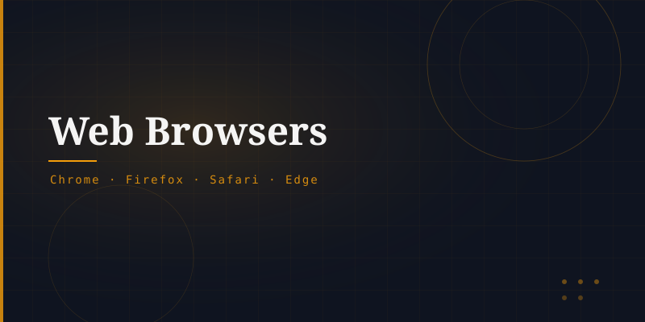

What is a Web Browser?
A web browser is an application that allows users to access and navigate the World Wide Web. It communicates with web servers using HTTP/HTTPS, retrieves HTML documents, and renders them visually on screen.
Popular browsers include Google Chrome, Mozilla Firefox, Microsoft Edge, Apple Safari, and Opera.
Core Functions
A browser performs several critical tasks: it resolves URLs into server addresses via DNS, sends HTTP requests, parses HTML/CSS/JavaScript, renders visual pages, manages cookies and sessions, and handles security through HTTPS certificates.
Each browser uses a rendering engine (e.g., Blink in Chrome, Gecko in Firefox) to convert HTML and CSS into the visual page you see.
Browser Evolution
WorldWideWeb — the very first browser, by Tim Berners-Lee.
Mosaic — the first browser with image support.
Netscape vs Internet Explorer — the "browser wars."
Google Chrome launches, dominating market share by 2012.
Modern Capabilities
Today's browsers are sophisticated platforms supporting progressive web apps, WebAssembly, WebGL for 3D graphics, offline caching, push notifications, and integrated developer tools — making them more like operating systems than simple document viewers.